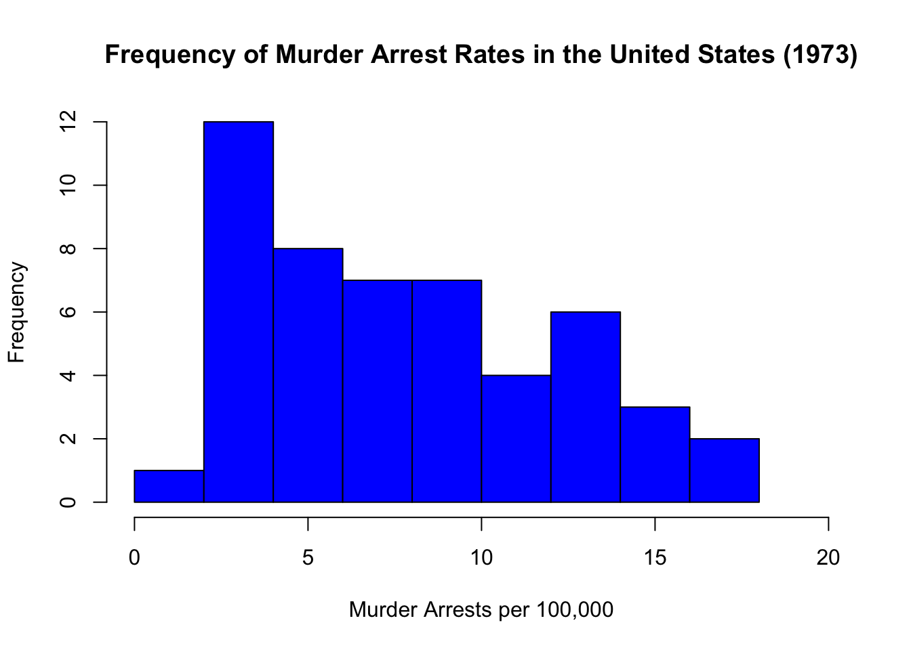

Assignments
This page contains all of my assignments for the class.
Assignment 1
Collaborators: Tori Borlase and Halle Wasser.
Problem 1
Install the datasets package on the console below using install.packages("datasets"). Now load the library.
# install.packages('datasets')
library(datasets)Now, it’s installed!
Load the USArrests dataset and rename it dat. Note that this dataset comes with R, in the package datasets, so there’s no need to load data from your computer. Why is it useful to rename the dataset?
dat <- USArrestsAnswer: It is useful to rename the dataset because it allows for replication. Renaming the dataset serves essentially the same function as “Save as” on a word document, which allows you to save the current version separately and still have access to previous versions. In other words, renaming the dataset allows you to perform functions without contaminating the original data.
Problem 2
Use this command to make the state names into a new variable called State.
dat$state <- tolower(rownames(USArrests))Now, the state names have become a new variable (called “state”)
This dataset has the state names as row names, so we just want to make them into a new variable. We also make them all lower case, because that will help us draw a map later - the map function requires the states to be lower case.
List the variables contained in the dataset USArrests.
names(dat)## [1] "Murder" "Assault" "UrbanPop" "Rape" "state"Answer: The variables contained in the dataset are Murder, Assualt, UrbanPop (Urban Population), Rape, and state.
Problem 3
What type of variable (from the DVB chapter) is Murder?
Answer: According to the DVB chapter, Murder is a quantitative variable because it measures how many murder arrests were made per 100,000 people.
What R Type of variable is it?
class(dat$Murder)## [1] "numeric"Answer: By using the class() function, we find that Murder is a numeric variable in R.
Problem 4
What information is contained in this dataset, in general? What do the numbers mean?
head(dat)## Murder Assault UrbanPop Rape state
## Alabama 13.2 236 58 21.2 alabama
## Alaska 10.0 263 48 44.5 alaska
## Arizona 8.1 294 80 31.0 arizona
## Arkansas 8.8 190 50 19.5 arkansas
## California 9.0 276 91 40.6 california
## Colorado 7.9 204 78 38.7 coloradoAnswer: Firstly, it’s important to note that this data was collected/released in 1973. In general, information about how many arrests were made for murder, assault, and rape per 100,000 people in each state is contained in this dataset. This dataset also contains the percentages of the population that reside in urban areas within each state. Although this data set is just a data set that comes with R and is generally used for practice, it teaches beginners to be sensitive about the analyses that they conduct using R. In this case specifically, the data points are not just numbers; rather, they represent people in the real world that were arrested for specific crimes. Thus, this data teaches us to be cognizant of the conclusions and inferences that are drawn from our calculations/analyses.
Problem 5
Draw a histogram of Murder with proper labels and title.
hist(dat$Murder, main = "Frequency of Murder Arrest Rates in the United States (1973)",
xlab = "Murder Arrests per 100,000", border = "black", col = "blue",
xlim = c(0, 20))
Problem 6
Please summarize Murder quantitatively. What are its mean and median? What is the difference between mean and median? What is a quartile, and why do you think R gives you the 1st Qu. and 3rd Qu.?
summary(dat$Murder)## Min. 1st Qu. Median Mean 3rd Qu. Max.
## 0.800 4.075 7.250 7.788 11.250 17.400Answer: The mean and median of “Murder” are 7.788 and 7.250, respectively. The minimum value is .800, Q1 is 4.075, Q3 is 11.250, and the maximum is 17.400. The mean is the average of all the data points (i.e. the sum of all the data values divided by the number of values). The median is the middle value when the data is arranged in order and it provides information regarding robustness. A quartile is a type of quantile that divides the data set into 4 (roughly) equally-sized parts (i.e. quarters) when the data is arranged from smallest to largest value. Therefore, quartiles serve to measure the spread of values in a given data set (these quartiles include 25%, 50%, 75% and 100%). R only gives us the 1st and 3rd quartiles because the 2nd quartile is the same as the median. As you can see in the output above, the value associated with 50% is the same as the median (because 50% of the values in the data set are above [and below] this value).
Problem 7
Repeat the same steps you followed for Murder, for the variables Assault and Rape. Now plot all three histograms together. You can do this by using the command par(mfrow=c(3,1)) and then plotting each of the three.
# Assault
summary(dat$Assault)## Min. 1st Qu. Median Mean 3rd Qu. Max.
## 45.0 109.0 159.0 170.8 249.0 337.0For assault arrests, the minimum value is 45.0, the maximum value is 337.0, the median is 159.0, and the mean is 170.8. Furthermore, Q1 is 109.0 and Q3 is 249.0.
# Rape
summary(dat$Rape)## Min. 1st Qu. Median Mean 3rd Qu. Max.
## 7.30 15.07 20.10 21.23 26.18 46.00For rape arrests, the minimum value is 7.30, the maximum value is 46.00, the median is 20.10, and the mean is 21.23. Furthermore, Q1 is 15.07 and Q3 is 26.18.
par(mfrow = c(3, 1))
hist(dat$Murder, main = "Frequency of Murder Arrest Rates in the United States (1973)",
xlab = "Murder Arrests per 100,000", border = "black", col = "Purple")
hist(dat$Assault, main = "Frequency of Assault Arrest Rates in the United States (1973)",
xlab = "Assault Arrests per 100,000", border = "black", col = "Red")
hist(dat$Rape, main = "Frequency of Rape Arrest Rates in the United States (1973)",
xlab = "Rape Arrests per 100,000", border = "black", col = "Green")
What does the command par do, in your own words (you can look this up by asking R ?par)?
Answer: The R command ‘par’ is used to modify how graphs are displayed, allowing plots to be combined into one cohesive graph. For specifically, ‘par’ gives the program parameters to plot it a certain way and then ‘mfrow’ puts it into an array. In this case, the array has 3 rows and 1 column, as denoted in the line of code.
What can you learn from plotting the histograms together?
Answer: By plotting the histograms together, we can learn quite a few things because the distributional differences are displayed very clearly. Firstly, we notice that the number of assault arrests per 100,000 people is significantly higher than both that of murder arrests and rape arrests. Furthermore, we notice that histograms for Rape Arrests and Murder Arrests are unimodal and right-skewed (albeit to different degrees) whereas the histogram for Assault Arrests is closer to a bimodal distribution.
Problem 8
In the console below (not in text), type install.packages("maps") and press Enter, and then type install.packages("ggplot2") and press Enter. This will install the packages so you can load the libraries.
Run this code:
# install.packages('maps')
# install.packages('ggplot2')
library(maps)
library(ggplot2)
ggplot(dat, aes(map_id = state, fill = Murder)) + geom_map(map = map_data("state")) +
expand_limits(x = map_data("state")$long, y = map_data("state")$lat)
What does this code do? Explain what each line is doing.
Answer is shown below. (Unfortunately, it would not allow me to fix the display of the comments next to each line, so if there is difficulty understanding which portion is code and which portion is my explanation, please let me know).
# install.packages('maps') this installs the maps package,
# which allows the program to draw geographical maps.
# install.packages('ggplot2') this installs the ggplot2
# program, which allows the program to create elegant data
# visualizations using the Grammar of Graphics. In other
# words, it allows for very complex plots/graphics to be
# created within a data frame.
# library(maps) this line loads the newly-installed 'maps'
# package
# library(ggplot2) this line loads the newly-installed
# 'ggplot2' package
# ggplot(dat, aes(map_id=state, fill=Murder)) +
# geom_map(map=map_data('state')) +
# expand_limits(x=map_data('state')$long,
# y=map_data('state')$lat)
# this long line of code reflects the 3 fundamental parts
# of the ggplot: data, aesthetics, and geometry. The first
# parameter tells the program to use the 'dat' dataset. It
# then tells the program to use the Murder data from 'dat'
# and the new 'state' variable that we create in Problem 2
# to create the aesthetic element of the plot. Together, it
# uses essentially signals that the mapping aesthetic
# layout should be based on the state variable while the
# color of each state (i.e. the respective shade of blue)
# is determined by the value associated with the number of
# murder arrests. The last part of this line of code
# indicates that the x and y limits of the plot should
# reflect the latitude and longitude values of the states.
# Collectively, each portion of this line of code plays a
# role in displaying a colorful map of the United States,
# whether different shades of blue represent different
# numbers of Murder arrests across the United States in
# 1973.\[\\[2in]\] # Assignment 2
Problem 1: Load data
Set your working directory to the folder where you downloaded the data.
setwd("/Users/theoathanitis/Desktop/CRIM 250/data sets")Read the data
dat <- read.csv(file = "dat.nsduh.small.1.csv")What are the dimensions of the dataset?
dim(dat)## [1] 171 7There are 171 rows and 7 columns in this dataset. Checking this is good practice because we want to make sure that we are working with the entire dataset that we intended. In other words, had Dr. Cuellar given us the entire dataset, we would expect to have tens of thousands of rows instead.
Problem 2: Variables
Describe the variables in the dataset.
names(dat)## [1] "mjage" "cigage" "iralcage" "age2" "sexatract" "speakengl"
## [7] "irsex"The variables in this dataset are “mjage”, “cigage”, “iralcage”, “age2”, sexatract”, speakengl”, and “irsex”.
The variables included in this dataset are just a select few from a national survey. The variable “mjage” denotes how old the individual was when they first used marijuana or hashish. “mjage” is a discrete (quantitative) variable.
The variable “cigage” denotes how old the individual was when they first started smoking cigarettes every day. “cigage” is a discrete (quantitative) variable.
The variable “iralcage” denotes how old the individual was when he/she first tried alcohol. “iralcage” is a discrete (quantitative) variable.
For the abovementioned variables (“mjage”, “cigage”, and “iralcage”), there are some interesting aspects of the variable coding. For all 3, bad data, having never used marijuana, not knowing the answer, refusing to answer, or leaving the question blank were logged as 985, 991, 994, 997, and 998, respectively. For the “cigage” variable, 999 was used in place of a legitimate skip, in which the individual had used cigarettes before, but had never used them everyday.
The variable “age2” is the final age variable that incorporates both the individual’s raw birthdate and changes to their age based on consistency checks throughout their responses. This variable also takes into account factors such as the age they entered on the roster, their pre-interview screener age and the final edited interview date. It is important to note that the age2 variable is a categorical variable because although some categories are representative of a specific age, other categories are indicative of age groups that span across 2+ ages. The age variable is interesting because it highlights the steps taken to protect the privacy and identity of individuals. Although it would have been possible to report this information as a quantitive variable, there may be very few members of certain groups, allowing someone to narrow down and find the individual that the data is referring to (for instance, 57 years old, in Tennessee, that self-identify as gay and that have smokes marijuana). Thus, age is reflected as a categorical variable in the dataset to protect confidentiality.
The “irsex” variable denotes the participant’s gender. More specifically, however, this is imputation revised gender. “irsex” is a nominal (categorical) variable.
The variable “sexatract” is essentially just the participant’s sexual orientation. This variable is a nominal (categorical) variable.
The variable “speakengl” is a measure of how well the participant speaks english. This variable is an ordinal (categorical) variable.
For these last 2 variables (“sexatract” and “speakengl”), here are some interesting aspects of the variable coding. For both, bad data, not knowing the answer, refusing to answer, and leaving the question blank were logged/coded as 85, 94, 97, and 98, respectively. For “sexattract”, 99 was used to indicate a legitimate skip.
What is this dataset about? Who collected the data, what kind of sample is it, and what was the purpose of generating the data?
ANSWER: The dataset is about drug use; more specifically, the subset of the dataset that we use in this assignment relates to marijuana, cigarette, and alcohol use. The NSDUH is conducted by the Substance Abuse and Mental Health Services Administration, which is an agency within the U.S. Department of Health and Human Services. This sample was a stratified random sample. This type of sample is useful because inferences can be made such that they are generalizable to the general population of interest. According to the agency, the purpose of generating this data is to monitor the nature, extent, and consequences of substance use in the US. In doing so, the SAMHSA uses this data to focus on the nation’s abuse treatment and prevention programs.
Problem 3: Age and gender
What is the age distribution of the sample like? Make sure you read the codebook to know what the variable values mean.
countsage <- table(dat$age2)
barplot(countsage, main = "Age Distribution", xlab = "Age Category",
ylab = "Frequency", xlim = c(0, 17), border = "black", col = "blue")Answer: The distribution of age is left skewed. However, since age is reflected in the categorical variable “age2” we would expect to see more people in categories that include a range of ages than in categories of a single age. For instance, category 14 represents individuals between the ages of 30 and 34 whereas category 6 includes only individuals that are 17 years old. Thus, this skew may simply be a consequence of differently sized categories, rather than being reflective of the actual shape of the distribution.
Do you think this age distribution representative of the US population? Why or why not?
ANSWER: No, I do not think that the age distribution in this sample is representative of the US population. In 2019, the distribution of age in the United States is reflected in the Statista graph attached below (not shown on this website). In the data sample, less than 7% of the participants were 65 years or older, which is significantly less than the US population as a whole. It’s also important to note that there are no respondents below the age of 15, even though there are plenty of individuals in the US below this age. However, it makes sense that they are not asked to complete the survey because any data on them would be relatively useless since not many individuals below that age use drugs. Furthermore, the distribution of age in the overall population seems (relatively) uniform, but the age distribution of the sample has a far more pronounced peak (mode). The age distribution of the sample population shows that the vast majority of individuals were between the ages of 35 and 49. I would like to ground this observation in the fact that this was the National Survey of Drug Use and Health, so it would make sense that the target of this survey is within this age range given that these individuals are the most likely to be drug users.
Is the sample balanced in terms of gender? If not, are there more females or males?
table(dat$irsex)##
## 1 2
## 91 80countsgender <- table(dat$irsex)
barplot(countsgender, main = "Gender Distribution", xlab = "Gender Category",
ylab = "Frequency", xlim = c(0, 2), border = "black", col = "blue",
names.arg = c("Male", "Female"))
Answer: The sample is not balanced in terms of gender because there are fewer females than males (91 males and 80 females).
Use this code to draw a stacked bar plot to view the relationship between sex and age. What can you conclude from this plot? tab.agesex <- table(dat\(irsex, dat\)age2) barplot(tab.agesex, main = “Stacked barchart”, xlab = “Age category”, ylab = “Frequency”, legend.text = rownames(tab.agesex), beside = FALSE) # Stacked bars (default)
tab.agesex <- table(dat$irsex, dat$age2)
barplot(tab.agesex, main = "Sex and Age", xlab = "Age Category",
ylab = "Frequency", legend.text = c("Male", "Female"), xlim = c(0,
18), beside = FALSE)Problem 4: Substance use
For which of the three substances included in the dataset (marijuana, alcohol, and cigarettes) do individuals tend to use the substance earlier?
summary(dat$mjage)## Min. 1st Qu. Median Mean 3rd Qu. Max.
## 7.00 14.00 16.00 15.99 17.50 35.00summary(dat$cigage)## Min. 1st Qu. Median Mean 3rd Qu. Max.
## 10.00 15.00 17.00 17.65 19.00 50.00summary(dat$iralcage)## Min. 1st Qu. Median Mean 3rd Qu. Max.
## 5.00 13.00 15.00 14.95 17.00 23.00par(mfrow = c(3, 1))
hist(dat$mjage, main = "Age and Marijuana Use", xlab = "Age of First Use",
border = "black", col = "Purple", xlim = c(0, 50), ylim = c(0,
50), breaks = 20)
hist(dat$cigage, main = "Age and Cigarette Use", xlab = "Age of Daily Use",
border = "black", col = "Green", xlim = c(0, 50), ylim = c(0,
50), breaks = 20)
hist(dat$iralcage, main = "Age and Alcohol Use", xlab = "Age of First Use",
border = "black", col = "Blue", xlim = c(0, 50), ylim = c(0,
50), breaks = 20)As shown above, individuals tend to use alcohol earlier. This is verified by the fact that there were a couple participants that first drank alcohol at 5 years of age (the exact number of people that responded with specific ages can be found by using the table() function, but I felt that it would be redundant to include here).
Problem 5: Sexual attraction
What does the distribution of sexual attraction look like? Is this what you expected?
par(mfrow = c(1, 1))
dat1 <- dat[dat$sexatract != 85, ]
dat2 <- dat1[dat1$sexatract != 94, ]
dat3 <- dat2[dat2$sexatract != 97, ]
dat4 <- dat3[dat3$sexatract != 98, ]
dat5 <- dat4[dat4$sexatract != 99, ]
countsexattract <- table(dat5$sexatract)
barplot(countsexattract, main = "Sexual Attraction Distribution",
xlab = "Sexual Attraction Category", ylab = "Frequency",
border = "black", col = "pink")ANSWER: First, I’d like to note that I went through the steps of taking out every possible missing data option just in case. In most instances, a statistician may choose to take fewer steps by first looking at the dataset and establishing which “special cases” are present that need to be removed before analyzing the data.
As shown in the bar plot above, the distribution is largely skewed to the right, such that most participants are only attracted to the opposite sex. This is definitely what I expected given that the vast majority of participants in this survey were part of an older generation that, historically, is less accepting of same sex (or LGBTQ+) attraction.
What is the distribution of sexual attraction by gender?
tab.sexorient <- table(dat5$irsex, dat5$sexatract)
barplot(tab.sexorient, main = "Sexual Orientation and Gender",
xlab = "Sexual Orientation Category", ylab = "Frequency",
legend.text = c("Male", "Female"), xlim = c(0, 7), ylim = c(0,
150), beside = FALSE)
table(dat5$sexatract, dat5$irsex)##
## 1 2
## 1 82 54
## 2 3 13
## 3 0 9
## 4 1 2
## 5 2 1
## 6 1 0The distribution of sexual attraction by gender is shown above Based on the figure below, it is notable that more males assert that they are only attracted to the opposite gender, whereas females often respond in a bi-curious nature (as exemplified by the fact that all of the participants that responded with being equally attracted to both genders were female).
Problem 6: English speaking
What does the distribution of English speaking look like in the sample? Is this what you might expect for a random sample of the US population?
table(dat$speakengl)##
## 1 2 3
## 161 8 2countspeakengl <- table(dat$speakengl)
barplot(countspeakengl, main = "English Speaking Distribution ",
xlab = "English Speaking Category", ylab = "Frequency", xlim = c(0,
4), ylim = c(0, 200), border = "black", col = "yellow")
As shown above, the distribution of English speaking is skewed to the right. This is to be expected because we would assume that, in order to live in the US and provide for one’s self and one’s family (which includes working a job, buying groceries, etc), one would need to know how to speak English very well. Furthermore, according to a recent Census survey, it was reported that almost 9% of the US population spoke English “less than very well” and had a very limited proficiency. In taking the opposite of this value, we notice that, for a random sample of the US population, this sample is relatively representative, with 94% of the participants being able to speak english very well (and, in turn, 6% speaking english at a lower proficiency level).
Are there more English speaker females or males?
tab.sexenglish <- table(dat5$irsex, dat5$speakengl)
barplot(tab.sexenglish, main = "English Speaking and Gender Distribution",
xlab = "English Speaking Category", ylab = "Frequency", legend.text = c("Male",
"Female"), xlim = c(0, 4), ylim = c(0, 150), beside = FALSE)table(dat5$irsex, dat5$speakengl)##
## 1 2 3
## 1 82 7 0
## 2 76 1 2There are more male than female English speakers. In looking at the table in more detail, we notice that for both the “very well” and “well” categories (i.e. categories 1 and 2), there are more male than female speakers in those groups (82 vs 76 and 7 vs 1, respectively). However, the only 2 respondents who do not know english well are both female. While this may seem interesting at first glance, I think that this minor discrepancy is mainly due to the fact that there are more males than females in the sample.
\[\\[2in]\]